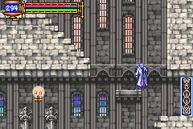

|
System
Level Up
ตัวละครสามารถเพิ่มความสามารถได้ด้วยการเก็บประสบการณ์
Soul
ในภาคนี้ตัวละครหลัก Soma มีพลังพิเศษ ที่สามารถดึงความสามารถของศัตรูมาใช้ได้
โดยในบางครั้งจะได้รับ Soul จากศัตรู และสามารถใช้พลังของศัตรูได้
หรืออาจได้รับ Soul จากแท่นที่เก็บโซลเอาไว้ก็ได้

โซลมีทั้งหมด 110 ชนิด หากเก็บได้ครบทั้งหมด จะมีของรางวัลให้ด้วย
คือ Chaos Ring และฉากจบก็จะเปลี่ยนไปด้วย
(All Soul Ending)
Ability
Ability จะมาจากโซลต่างๆ ดังนี้
Grave Keeper - ช่วยให้ Dash ถอยหลังได้ หาได้จากใกล้ห้อง Save แรกสุด
Skeleton Blaze - ทำให้สามารถ Slide ได้ หาได้ที่ห้องหลังจากปราบ Boss :
Big Golem
Malphas - ทำให้สามารถ Double Jump ได้ หาได้ที่ห้องหลังจากปราบ Boss : Great
Armor
Kicker Skelton - ทำให้สามารถ Jump Kick ได้ หาได้จาก Kicker Skeleton บริเวณหน้าห้อง
Save ใกล้ประตูดำ
Hippogryph - ทำให้ เมื่ออยู่กลางอากาศสามารถพุ่งตัวขึ้นไปด้านบนได้ หาได้จาก
WallSecret13
Galamoth - ทำให้ การเปลี่ยนแปลงของเวลาจะไม่มีผล หาได้ที่ห้องหลังจากปราบ
Boss : Legion
Shop
นอกจากนั้นแล้ว Soma สามารถที่จะเก็บประสบการณ์เพิ่มเพิ่ม Level ได้
รวมทั้งสามารถเก็บ Item มาสวมใส่ หรือใช้ได้เช่นกัน
และแน่นอนว่า สามารถเก็บเงิน เพื่อซื้อ Item จากร้านค้าได้อีกด้วย
สามารถซื้อของได้จาก Hammer ที่หน้าปราสาท
(ซื้อได้ ขายได้ทุกอย่าง)
Weapon
อาวุธของ Soma นั้น เขาสามารถถือได้หลายชนิด
ตั้งแต่ มีด, สนับมือ, ดาบ, ขวาน, หอก, ปืน
แต่สามารถแบ่งเป็น 3 หัวข้อใหญ่ๆ ได้คือ
(อาวุธประเภทโจมตีไปด้านหน้าโดยตรง)
(อาวุธประเภทโจมตีแบบกวาดเป็นวงกว้าง)
(ปืน...)
Map
ภาคนี้จะมีปราสาทเพียงปราสาทเดียวเท่านั้น
มีแผนที่ทั้งหมด 100%
(แผนที่แบบละเอียดดูได้ที่นี่ MAP
อ้างอิงจาก Gamefaqs)
(หากดูแผนที่จาก Gamefaqs ไม่ได้ ให้ดูที่นี่ Map)
(แต่มีวิธีทำให้ได้ 102.3% ดูได้จากหัวข้อ Glitch)
Save Room
ใช้สำหรับเติม HP และ MP อีกทั้งยังใช้ Save เกมอีกด้วย
เมื่อมาถึง ยืนหน้ารูปปั้นแล้วกดปุ่ม "บน" นะครับ
Warp Door
ประตูวาร์ปภาคนี้ สามารถวาร์ปไปประตูวาร์ปอื่นๆ ได้ทั้งหมด (ห้องสีเหลืองในแผนที่)
Boss Door

เมื่อปราบ Boss ได้ จะได้รับเม็ดพลัง เพิ่ม HP และ MP ให้เต็ม
(หากเล่น Julius เม็ดพลังนั้นจะทำให้ Julius เก่งขึ้น)
|

{kind=link}